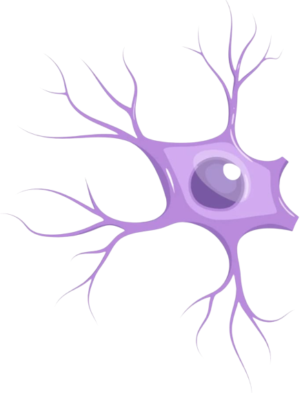
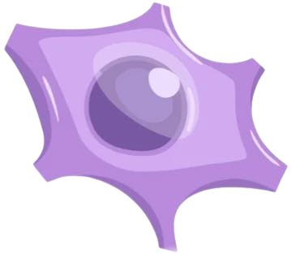
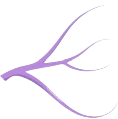
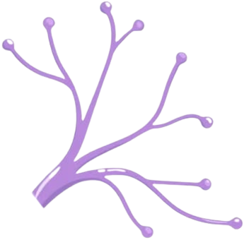

Corpo celular: é a região do neurônio na qual se localiza o núcleo e várias organelas.

Dendritos: são prolongamentos geralmente curtos e bastante ramificados que partem do
corpo celular. E eles recebem a maioria dos impulsos nervosos que chegam aos neurônios.
Axônio (roxo): é um prolongamento cilíndrico com o cumprimento e diâmetro variáveis, porém geralmente maior que o dendrito. Cada neurônio apresenta um único axônio que envia impulsos nervosos a outras células.
Extrato mielínico (verde): é composto de mielina, substância formada por lipídeos e proteínas, que reveste o axônio. Seu papel é de aumentar a velocidade de condução dos impulsos nervosos.

Terminações do axónio: contêm sinapses, estruturas especializadas onde são libertadas susbtâncias químicas, neurotransmissores, que estabelecem a comunição com as dendrites ou corpo celular de outros neurónios.